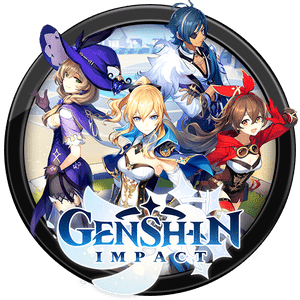

Genshin Impact

Selanjutnya adalah game fenomenal yaitu Genshin Impact. Game action-RPG dengan mekanisme gacha ini mendapat banyak pujian karena visualnya yang luar biasa dan mekanisme gameplay-nya yang menyenangkan.
Di samping itu, dunia terbuka yang ditawarkan Genshin Impact juga sangat luas dan karenanya ini jadi terasa tidak ‘terbatas’ jika dibandingkan game lainnya. Sama seperti CODM, Genshin Impact tersedia untuk dimainkan secara gratis.